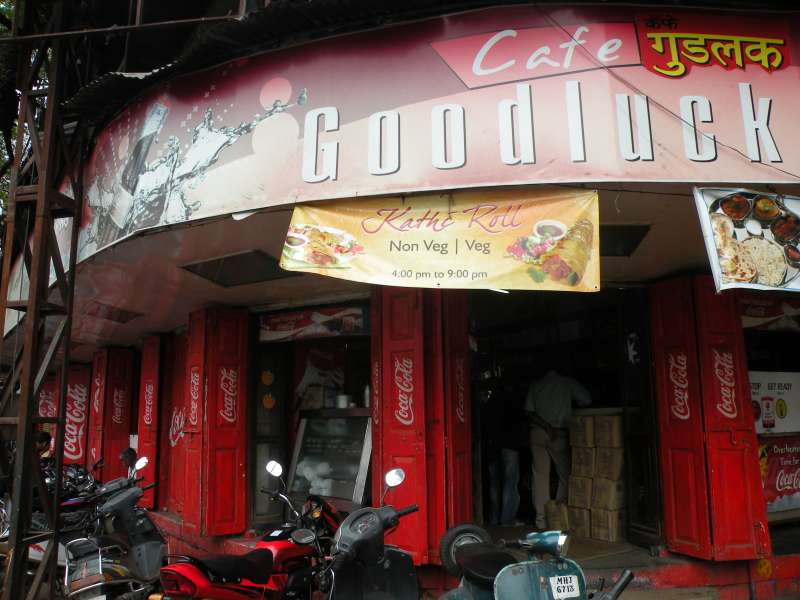
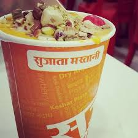
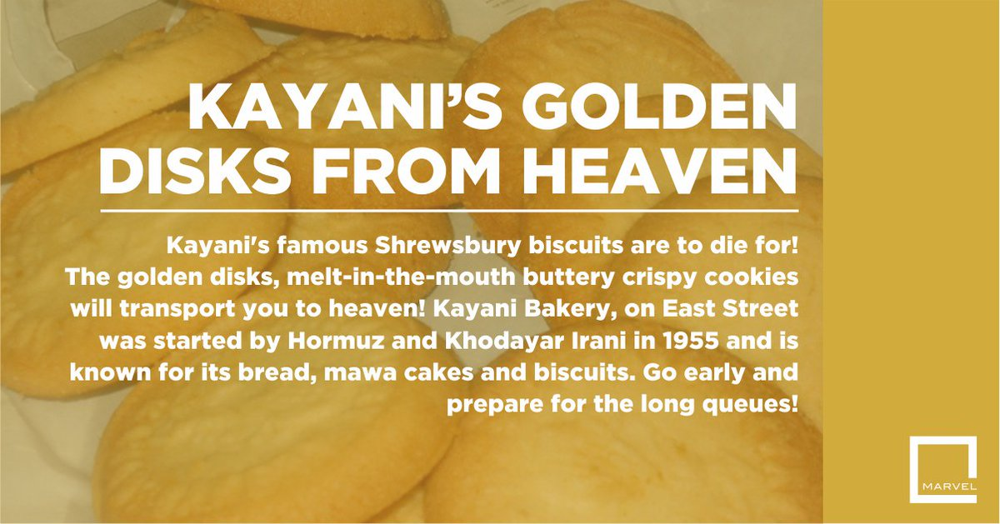
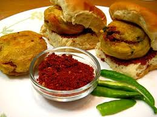
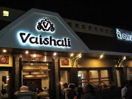
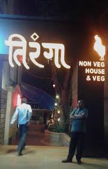
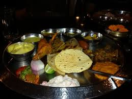
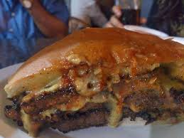

PUNERI SPICES
To Get Known To The Delicious Taste Of India Travel Throughout Pune.It Would Be A Great Refreshment To All.....
To Get Known To The Delicious Taste Of India Travel Throughout Pune.It Would Be A Great Refreshment To All.....
The perfect point for the wildest parties, host to renowned meditation centers and the kernel of popular management, medical and engineering colleges, Pune is the place to live in if you want a happening rushing life. The city just never stops, neither does its people. And food is their favorite reason to keep going and exploring new places. The street culture from Delhi has rapidly spread and Pune is nailing it. Spicy tangy delicious street foods can be found in every nook and corner of the lanes. These are the places you need to look out for on your trip to Pune.
.| NAME | GLANCE |
|---|---|
1. Goodluck Cafe |
 |
.2. Burger King |
 |
3. Sujata Mastani |
 |
.4. Kayani Bakery |
 |
.5. JJ Garden Vada Pav |
 |
6. Marz-O-Rin |
|
7. Vaishali |
 |
8. Tiranga Non-Veg |
 |
9. Shabree |
 |
10. Vohuman |
 |